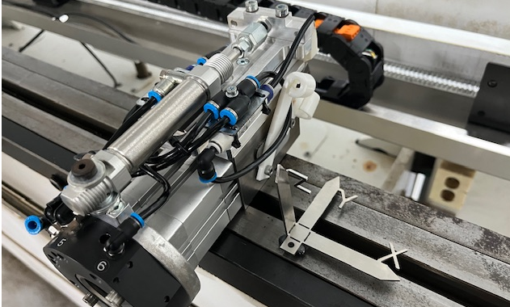

Frame concept (RACell)
User frames
To position coordinates against each other Frames are used. They could also be used to allow the operator on the machine fine adjustments.
The Flux output works with six frames:
-
Frame 1: Robot (main frame)
-
Frame 2: Pickup Dispenser
-
Frame 3: Pickup Pallet
-
Frame 4: Centering Table
-
Frame 5: Regrip station
-
Frame 6: Tool changer
If a operator needs to fine adjust a frame to run a program then he could tweak a frame within some milimeter. Generating the next Flux program this component positons need to be corrected in Flux that the next output could be again done with identical frames
If a new program is loaded and one of the frames is different from Frame 1 then the controller should give a warning. There might be a button to set frame 2-7 identical to frame 1 (main frame)
Length of tools and tool frames
The robot works with a tool frame (Wrist to TCP) and a User frame (Machine to Robot Zero)
The current tool frames are
-
Frame1: 0 0 138 - Measurement system
-
frame2: -19.3 0 279.3 - Pinch gipper
The TCP (front center face) needs to be calibrated vs. the writst point of the robot. Best practicse is to use a USB camera and rotate the robot around it until it rotates perfectly around the TCP point.
Final coordinates of the pinch gripper are [-19 0 279.3]
Rotations of tool frames
ToolFrame1: Pointer (Without Toolframe rotation)
The Fanuc comes from a history of lifting so the the Z coordinate is upwards when pointed towards the floor.
ToolFrame2: Pinch Gripper
When we work with the pinch gripper we want while bending the machine coordinate system on the gripper. To turn back the Tool coordinate system into the world coordinate system we need a ToolFrame1 = [0 0 166 90 0 90]; The coordinate system of the pinch gripper after rotation

ToolFrame3: Vacuum Gripper
When we work with the Vacuum gripper we want while bending the machine coordinate system on the gripper. To turn back the Tool coordinate system into the world coordinate system we need a ToolFrame1 = [0 0 166 180 0 180 ???]; The coordinate system of the gripper after rotation